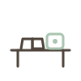
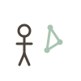
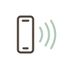

Vivianne dos Santos · uma porta
A Grande Transicao
o que acontece quando a humanidade muda de sistema operativo sem ainda saber viver no novo?
A Grande Transicao nao mostra o futuro ao longe. Mostra o futuro ja escondido dentro de uma cozinha de hoje, a espera de nome.
Paleta · dois registos
Registo A · antropologia do presente (85%)
Registo B · etnografia pos-sobrevivencia (15%)
Assinatura · o limiar entre dois tempos

Duas temporalidades dentro da mesma imagem: o hoje e o que esta a nascer. A tinta e o gesto herdado, a salvia e o que emerge. A sensacao: isto pertence a hoje e a amanha ao mesmo tempo.
Motivos de dois tempos
Caderno e IA

Relogio e planta
Lista e pausa

Tinta #4D433A = o hoje · salvia #A9C4B0 = o que nasce. A cor separa as duas temporalidades.
Tipografia · serifada classica, maiusculas, respiracao editorial
A Grande Transicao
Vivianne dos Santos
Diferencia de imediato do universo da produtividade e do coaching.
Modelo de prompt · registo A
Universo: A Grande Transicao Tensao e dominio: <ex. O Controlo vs A Confianca, Maternidade> Manifestacao: <ex. culpa ao descansar> Cena: quotidiano de hoje, cozinha, mesa, telemovel, crianca, janela Assinatura: duas temporalidades na mesma imagem, o hoje e o que esta a nascer Paleta: #F5F1EA, #E8DDCB, #CDB79E, #9B866C, #4D433A Proibido: robos, cidades futuristas, hologramas, cyberpunk, IA antropomorfica, sci-fi Emocao: lucidez, o futuro escondido dentro do presente Registo: fotografia realista, luz domestica, materiais reais